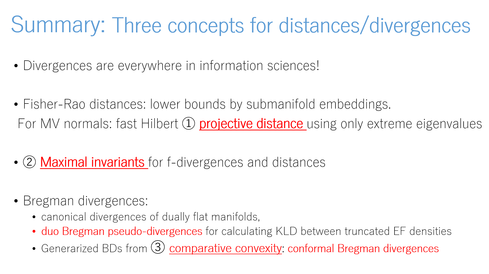
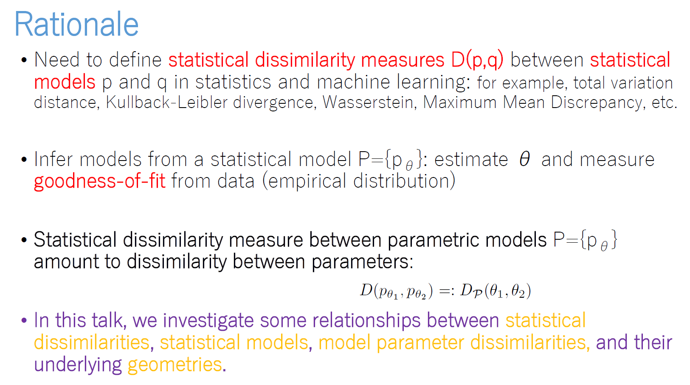
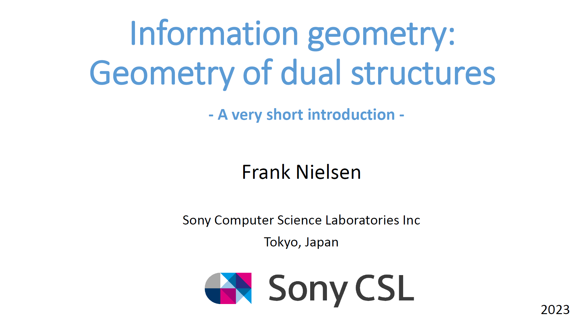

Media: Chernoff point (simplex) e/m geodesic+Fisher Rao (simplex) Comparison Fisher-Rao/Hilbert Fisher-Rao bivariate normals Fisher-Rao (boundary condition) Fisher-Rao (initial condition) +/- alpha-geodesics (simplex) Hilbert hexagonal ball (simplex)

In this talk, I introduce three recent concepts for distances: 1. projective distances, 2. comparative convexity, and 3. maximal invariant. Presented at EDMSA'24
Divergences and comparative convexity (2024)

Information geometry: A short introduction with some recent advances, Bayes-Duality Workshop (PDF), June 2023
Information geometry: Geometry of dual structures (A very short introduction) (pdf)

Introduction to information geometry (pdf)
Video on Youtube, February 23rd 2022.